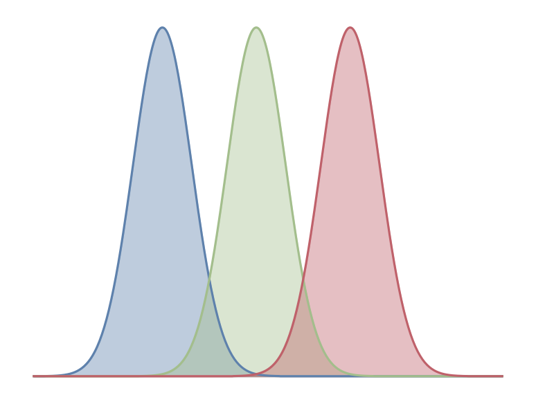
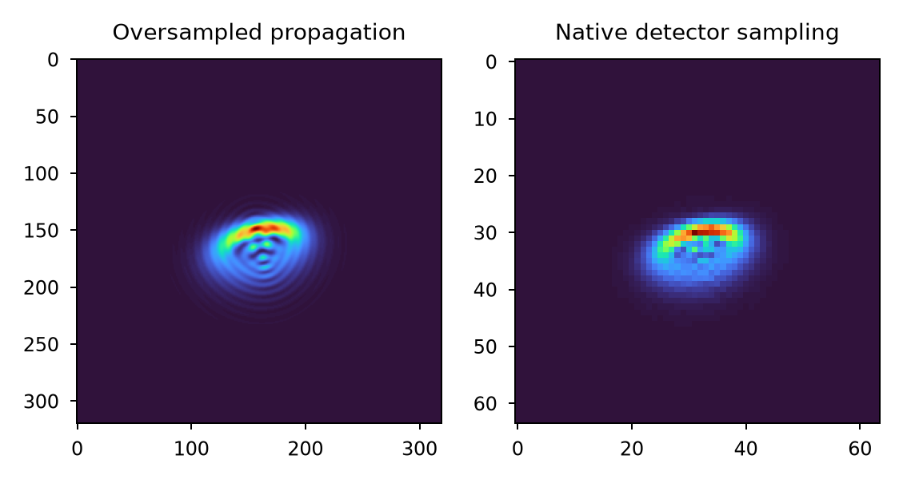

Image Sensors#
Lentil does not provide an integrated detector modeling capability, but instead provides a collection of functions in the detector submodule to help model image sensors and represent some of the more commonly encountered noise sources.
Signal flow#
A large body of technical literature exists describing both how modern image sensors work as well as the various sources of noise that impact their overall performance. The details of the signal flow through an image sensor and decisions about which specific noise sources should be modeled depend on the application, but either of the following two references provide a good starting point:
Photon Transfer, James Janesick
Note
Because both light intensity and QE are spectrally-dependent but electron count is not, it is advantageous to begin working in units of electrons as early as possible for best performance.
Charge collection#
Lentil’s detector.collect_charge() function models the charge collection process
for a monochromatic sensor and the detector.collect_charge_bayer() models the same
process for a sensor with a Bayer filter.

Pixel effects#
An image sensor is constructed from an array of pixels that sample a continuous light
field to produce a digital image. Because Lentil models diffraction numerically by
propagating a finite set of points through an optical system, the discretely sampled
image plane intensity must be convolved with the pixel’s aperture function to accurately
represent the intensity signal sensed by each pixel. Lentil’s detector.pixel()
function implements this convolution. After convolving the image plane intensity with
the pixel MTF (the sinc function), the data should be resampled to native detector
sampling using rescale(). The detector.pixelate() function combines the
convolution and resampling operations into a single method.
psf_pixelate = lentil.detector.pixelate(psf, oversample=5)

Cosmic rays#
Cosmic rays are high energy particles that travel through space. When they strike
an image sensor they create a signal that appears as a saturated pixel or streak of
saturated pixels. Lentil’s detector.cosmic_rays() function simulates random
cosmic ray strikes during an integration with hit rates and fluxes taken from [1].